Filtros
¿Qué es un filtro?
A veces es deseable tener circuitos capaces de filtrar selectivamente una frecuencia o un rango de frecuencias a partir de una mezcla de diferentes frecuencias en un circuito. Un circuito diseñado para realizar esta selección de frecuencia se llamacircuito de filtro, o simplemente unfiltrar. Una necesidad común de circuitos de filtro es en los sistemas estéreo de alto rendimiento, donde ciertos rangos de frecuencias de audio deben amplificarse o suprimirse para obtener la mejor calidad de sonido y eficiencia energética. Puede que estés familiarizado conecualizadores, que permiten ajustar las amplitudes de varios rangos de frecuencia para adaptarse al gusto del oyente y a las propiedades acústicas del área de escucha. Quizás también estés familiarizado conredes cruzadas, que impiden que ciertos rangos de frecuencias lleguen a los altavoces. Un tweeter (altavoz de alta frecuencia) es ineficiente para reproducir señales de baja frecuencia, como ritmos de batería, por lo que se conecta un circuito cruzado entre el tweeter y los terminales de salida del estéreo para bloquear las señales de baja frecuencia, pasando solo señales de alta frecuencia a los terminales de conexión del altavoz. Esto proporciona una mejor eficiencia del sistema de audio y, por tanto, un mejor rendimiento. Tanto los ecualizadores como las redes de cruce son ejemplos de filtros, diseñados para lograr el filtrado de ciertas frecuencias.
Otra aplicación práctica de los circuitos de filtro es el "acondicionamiento" de formas de onda de voltaje no sinusoidales en circuitos de potencia. Algunos dispositivos electrónicos son sensibles a la presencia de armónicos en el voltaje de la fuente de alimentación y, por lo tanto, requieren acondicionamiento de energía para su correcto funcionamiento. Si un voltaje de onda sinusoidal distorsionada se comporta como una serie de formas de onda armónicas agregadas a la frecuencia fundamental, entonces debería ser posible construir un circuito de filtro que solo permita el paso de la frecuencia de la forma de onda fundamental, bloqueando todos los armónicos (de mayor frecuencia).
En esta lección estudiaremos el diseño de varios circuitos de filtro elementales. Para reducir la carga matemática del lector, haré un uso extensivo de SPICE como herramienta de análisis, mostrando diagramas de Bode (amplitud versus frecuencia) para los distintos tipos de filtros. Sin embargo, tenga en cuenta que estos circuitos se pueden analizar en varios puntos de frecuencia mediante análisis repetidos en serie-paralelo, muy parecido al ejemplo anterior con dos fuentes (60 y 90 Hz), si el estudiante está dispuesto a invertir mucho tiempo trabajando y reelaborando cálculos de circuitos para cada frecuencia.
- REVISAR:
- A filtrarEs un circuito de CA que separa algunas frecuencias de otras dentro de señales de frecuencia mixta.
- Audioecualizadores y redes cruzadasHay dos aplicaciones bien conocidas de los circuitos de filtro.
- A trama de presagioes un gráfico que traza la amplitud o fase de la forma de onda en un eje y la frecuencia en el otro.
Low-pass filters
Por definición, un filtro de paso bajo es un circuito que ofrece un paso fácil a señales de baja frecuencia y un paso difícil a señales de alta frecuencia. Hay dos tipos básicos de circuitos capaces de lograr este objetivo, y muchas variaciones de cada uno: El filtro inductivo de paso bajo en la Figuraa continuación y el filtro capacitivo de paso bajo en la Figuraa continuación
{kind=link}
{kind=link}
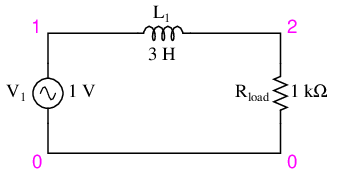
Filtro inductivo de paso bajo
La impedancia del inductor aumenta al aumentar la frecuencia. Esta alta impedancia en serie tiende a impedir que las señales de alta frecuencia lleguen a la carga. Esto se puede demostrar con un análisis SPICE: (Figuraa continuación)
{kind=link}
inductive lowpass filter v1 1 0 ac 1 sin l1 1 2 3 rload 2 0 1k .ac lin 20 1 200 .plot ac v(2) .end
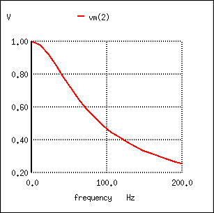
La respuesta de un filtro inductivo de paso bajo disminuye al aumentar la frecuencia.
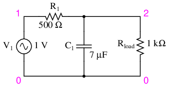
Filtro capacitivo de paso bajo.
La impedancia del condensador disminuye al aumentar la frecuencia. Esta baja impedancia en paralelo con la resistencia de carga tiende a cortocircuitar las señales de alta frecuencia, haciendo caer la mayor parte del voltaje a través de la resistencia en serie R.1. (Cifraa continuación)
{kind=link}
capacitive lowpass filter v1 1 0 ac 1 sin r1 1 2 500 c1 2 0 7u rload 2 0 1k .ac lin 20 30 150 .plot ac v(2) .end
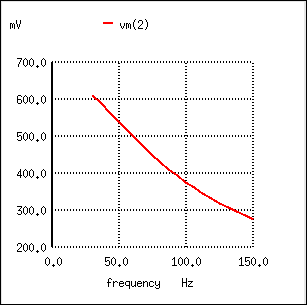
La respuesta de un filtro de paso bajo capacitivo disminuye al aumentar la frecuencia.
El filtro inductivo de paso bajo es el pináculo de la simplicidad, con un solo componente que comprende el filtro. La versión capacitiva de este filtro no es mucho más compleja, ya que solo se necesitan una resistencia y un condensador para su funcionamiento. Sin embargo, a pesar de su mayor complejidad, los diseños de filtros capacitivos generalmente se prefieren a los inductivos porque los capacitores tienden a ser componentes reactivos "más puros" que los inductores y, por lo tanto, su comportamiento es más predecible. Por "puro" quiero decir que los condensadores exhiben pocos efectos resistivos que los inductores, lo que los hace casi 100% reactivos. Los inductores, por otro lado, suelen exhibir importantes efectos disipativos (similares a los de una resistencia), tanto en las grandes longitudes de cable utilizados para fabricarlos como en las pérdidas magnéticas del material del núcleo. Los condensadores también tienden a participar menos en los efectos de "acoplamiento" con otros componentes (generar y/o recibir interferencias de otros componentes a través de campos eléctricos o magnéticos mutuos) que los inductores, y son menos costosos.
Sin embargo, el filtro inductivo de paso bajo suele preferirse en las fuentes de alimentación de CA-CC para filtrar la forma de onda de “ondulación” de CA creada cuando la CA se convierte (rectifica) en CC, dejando pasar solo el componente de CC pura. La razón principal de esto es el requisito de una baja resistencia del filtro para la salida de dicha fuente de alimentación. Un filtro de paso bajo capacitivo requiere una resistencia adicional en serie con la fuente, mientras que el filtro de paso bajo inductivo no. En el diseño de un circuito de alta corriente como una fuente de alimentación de CC donde no es deseable una resistencia en serie adicional, el filtro inductivo de paso bajo es la mejor opción de diseño. Por otro lado, si el peso reducido y el tamaño compacto son prioridades más importantes que la baja resistencia interna de la fuente de alimentación en el diseño de una fuente de alimentación, el filtro capacitivo de paso bajo podría tener más sentido.
Todos los filtros de paso bajo tienen una clasificación determinadafrecuencia de corte. Es decir, la frecuencia por encima de la cual el voltaje de salida cae por debajo del 70,7% del voltaje de entrada. Este porcentaje de corte de 70,7 no es realmente arbitrario, aunque pueda parecerlo a primera vista. En un filtro de paso bajo capacitivo/resistivo simple, es la frecuencia a la que la reactancia capacitiva en ohmios es igual a la resistencia en ohmios. En un filtro capacitivo de paso bajo simple (una resistencia, un condensador), la frecuencia de corte viene dada por:
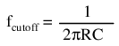
Al insertar los valores de R y C de la última simulación de SPICE en esta fórmula, llegamos a una frecuencia de corte de 45,473 Hz. Sin embargo, cuando observamos el gráfico generado por la simulación SPICE, vemos el voltaje de carga muy por debajo del 70,7% del voltaje de la fuente (1 voltio), incluso a una frecuencia tan baja como 30 Hz, por debajo del punto de corte calculado. ¿Qué ocurre? El problema aquí es que la resistencia de carga de 1 kΩ afecta la respuesta de frecuencia del filtro, desviándola de lo que la fórmula nos dijo que sería. Sin esa resistencia de carga, SPICE produce un diagrama de Bode cuyos números tienen más sentido: (Figuraa continuación)
{kind=link}
capacitive lowpass filter v1 1 0 ac 1 sin r1 1 2 500 c1 2 0 7u * note: no load resistor! .ac lin 20 40 50 .plot ac v(2) .end
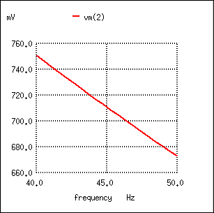
Para el filtro capacitivo de paso bajo con R = 500 Ω y C = 7 µF, la salida debe ser del 70,7 % a 45,473 Hz.
fcutoff = 1/(2πRC) = 1/(2π(500 Ω)(7 µF)) = 45.473 Hz
Cuando se trata de circuitos de filtro, siempre es importante tener en cuenta que la respuesta del filtro depende de los valores de los componentes del filtro.yla impedancia de la carga. Si una ecuación de frecuencia de corte no tiene en cuenta la impedancia de la carga, asume que no hay carga y no dará resultados precisos para un filtro de la vida real que conduce energía a una carga.
Una aplicación frecuente del principio del filtro capacitivo de paso bajo es el diseño de circuitos que tienen componentes o secciones sensibles al "ruido" eléctrico. Como se mencionó al comienzo del último capítulo, a veces las señales de CA pueden "acoplarse" de un circuito a otro mediante capacitancia (Cextraviado) y/o inductancia mutua (Mextraviado) entre los dos conjuntos de conductores. Un buen ejemplo de esto son las señales de CA no deseadas (“ruido”) que quedan impresas en las líneas de alimentación de CC que alimentan circuitos sensibles: (Figuraa continuación)
{kind=link}
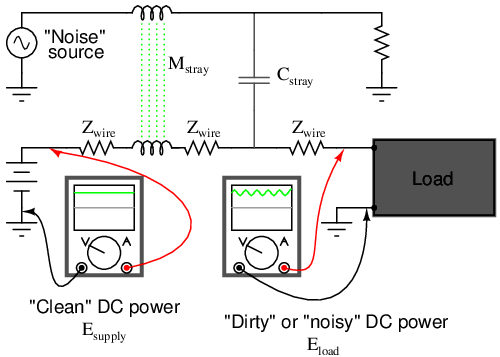
El ruido se combina mediante capacitancia parásita e inductancia mutua en energía CC "limpia".
El osciloscopio-metro de la izquierda muestra la energía "limpia" de la fuente de voltaje de CC. Sin embargo, después del acoplamiento con la fuente de ruido de CA a través de inductancia parásita mutua y capacitancia parásita, el voltaje medido en los terminales de carga ahora es una mezcla de CA y CC, siendo la CA no deseada. Normalmente, uno esperaría que Ecargaser exactamente idéntico a Efuente, porque los conductores ininterrumpidos que los conectan deben hacer que los dos conjuntos de puntos sean eléctricamente comunes. Sin embargo, la impedancia del conductor de potencia permite que los dos voltajes difieran, lo que significa que la magnitud del ruido puede variar en diferentes puntos del sistema de CC.
Si deseamos evitar que ese "ruido" llegue a la carga de CC, todo lo que debemos hacer es conectar un filtro de paso bajo cerca de la carga para bloquear cualquier señal acoplada. En su forma más simple, esto no es más que un capacitor conectado directamente a través de los terminales de alimentación de la carga; el capacitor se comporta como una impedancia muy baja ante cualquier ruido de CA y lo cortocircuita. Un condensador de este tipo se llamacondensador de desacoplamiento: (Cifraa continuación)
{kind=link}
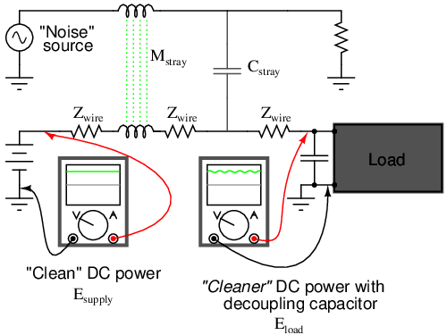
El condensador de desacoplamiento, aplicado a la carga, filtra el ruido de la fuente de alimentación de CC.
Un vistazo rápido a una placa de circuito impreso (PCB) abarrotada generalmente revelará capacitores de desacoplamiento dispersos por todas partes, generalmente ubicados lo más cerca posible de las cargas de CC sensibles. El tamaño del condensador suele ser de 0,1 µF o más, una cantidad mínima de capacitancia necesaria para producir una impedancia lo suficientemente baja como para eliminar cualquier ruido. Una mayor capacitancia permitirá filtrar mejor el ruido, pero el tamaño y la economía limitan los condensadores de desacoplamiento a valores exiguos.
- REVISAR:
- Un filtro de paso bajo permite el paso fácil de señales de baja frecuencia desde la fuente a la carga y el paso difícil de señales de alta frecuencia.
- Los filtros inductivos de paso bajo insertan un inductor en serie con la carga; Los filtros capacitivos de paso bajo insertan una resistencia en serie y un condensador en paralelo con la carga. El primer diseño de filtro intenta “bloquear” la señal de frecuencia no deseada mientras que el segundo intenta cortocircuitarla.
- The frecuencia de cortepara un filtro de paso bajo es aquella frecuencia a la cual el voltaje de salida (carga) es igual al 70,7% del voltaje de entrada (fuente). Por encima de la frecuencia de corte, el voltaje de salida es inferior al 70,7% del de entrada y viceversa.
High-pass filters
La tarea de un filtro de paso alto es justo la opuesta a la de un filtro de paso bajo: ofrecer un paso fácil de una señal de alta frecuencia y un paso difícil a una señal de baja frecuencia. Como era de esperar, el inductivo (Figuraa continuación) y capacitivo (Figuraa continuación) del filtro de paso alto son todo lo contrario de sus respectivos diseños de filtro de paso bajo:
{kind=link}
{kind=link}
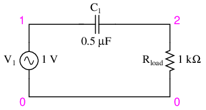
Filtro capacitivo de paso alto.
La impedancia del condensador (Figuraanterior) aumenta al disminuir la frecuencia. (Cifraa continuación) Esta alta impedancia en serie tiende a bloquear la carga de las señales de baja frecuencia.
{kind=link}
capacitive highpass filter v1 1 0 ac 1 sin c1 1 2 0.5u rload 2 0 1k .ac lin 20 1 200 .plot ac v(2) .end
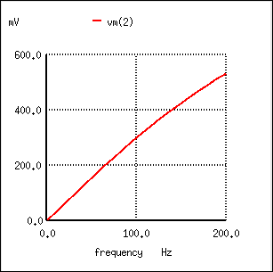
La respuesta del filtro capacitivo de paso alto aumenta con la frecuencia.
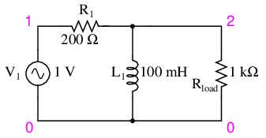
Filtro inductivo de paso alto.
La impedancia del inductor (Figuraanterior) disminuye al disminuir la frecuencia. (Cifraa continuación) Esta baja impedancia en paralelo tiende a impedir que las señales de baja frecuencia lleguen a la resistencia de carga. Como consecuencia, la mayor parte del voltaje cae a través de la resistencia en serie R1.
{kind=link}
inductive highpass filter v1 1 0 ac 1 sin r1 1 2 200 l1 2 0 100m rload 2 0 1k .ac lin 20 1 200 .plot ac v(2) .end
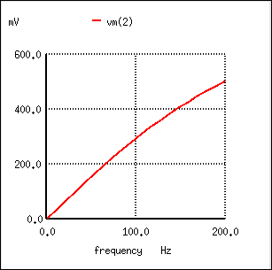
La respuesta del filtro inductivo de paso alto aumenta con la frecuencia.
Esta vez, el diseño capacitivo es el más simple y requiere solo un componente más allá de la carga. Y, nuevamente, la pureza reactiva de los capacitores sobre los inductores tiende a favorecer su uso en el diseño de filtros, especialmente con filtros de paso alto donde las altas frecuencias comúnmente hacen que los inductores se comporten de manera extraña debido al efecto superficial y las pérdidas electromagnéticas del núcleo.
Al igual que los filtros de paso bajo, los filtros de paso alto tienen una clasificaciónfrecuencia de corte, por encima del cual el voltaje de salida aumenta por encima del 70,7% del voltaje de entrada. Al igual que en el caso del circuito del filtro capacitivo de paso bajo, la frecuencia de corte del filtro capacitivo de paso alto se puede encontrar con la misma fórmula:
En el circuito de ejemplo, no hay otra resistencia que la de carga, por lo que ese es el valor de R en la fórmula.
Utilizando un sistema estéreo como ejemplo práctico, un condensador conectado en serie con el altavoz de agudos (agudos) servirá como filtro de paso alto, imponiendo una alta impedancia a las señales de graves de baja frecuencia, evitando así que esa energía se desperdicie en un altavoz ineficaz para reproducir dichos sonidos. De la misma manera, un inductor conectado en serie con el altavoz de graves (graves) servirá como filtro de paso bajo para las frecuencias bajas que ese altavoz en particular está diseñado para reproducir. En este circuito de ejemplo simple, el altavoz de rango medio está sujeto a todo el espectro de frecuencias de la salida del estéreo. A veces se utilizan redes de filtros más elaboradas, pero esto debería darle una idea general. También tenga en cuenta que sólo le estoy mostrando un canal (ya sea izquierdo o derecho) en este sistema estéreo. Un estéreo real tendría seis parlantes: 2 woofers, 2 de rango medio y 2 tweeters.
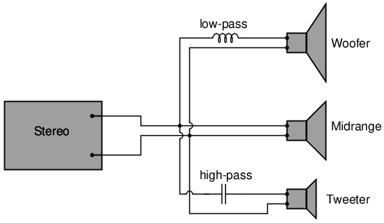
El filtro de paso alto dirige las frecuencias altas al tweeter, mientras que el filtro de paso bajo dirige las frecuencias bajas al woofer.
Para obtener un mejor rendimiento aún, nos gustaría tener algún tipo de circuito de filtro capaz de pasar frecuencias entre bajas (graves) y altas (agudos) al altavoz de rango medio para que ninguna potencia de la señal de baja o alta frecuencia se desperdicie en un altavoz incapaz de reproducir eficientemente esos sonidos. Lo que estaríamos buscando se llamapaso de bandafiltro, que es el tema de la siguiente sección.
- REVISAR:
- Un filtro de paso alto permite el paso fácil de señales de alta frecuencia desde la fuente a la carga y el paso difícil de señales de baja frecuencia.
- Los filtros capacitivos de paso alto insertan un condensador en serie con la carga; Los filtros inductivos de paso alto insertan una resistencia en serie y un inductor en paralelo con la carga. El primer diseño de filtro intenta “bloquear” la señal de frecuencia no deseada mientras que el segundo intenta cortocircuitarla.
- The frecuencia de cortepara un filtro de paso alto es aquella frecuencia a la cual el voltaje de salida (carga) es igual al 70,7% del voltaje de entrada (fuente). Por encima de la frecuencia de corte, el voltaje de salida es mayor que el 70,7% del de entrada, y viceversa.
Band-pass filters
Hay aplicaciones en las que es necesario filtrar una banda, una dispersión o frecuencias concretas de una gama más amplia de señales mixtas. Se pueden diseñar circuitos de filtro para realizar esta tarea combinando las propiedades de paso bajo y paso alto en un solo filtro. El resultado se llamapaso de bandafiltrar. La creación de un filtro de paso de banda a partir de un filtro de paso bajo y de paso alto se puede ilustrar mediante diagramas de bloques: (Figuraa continuación)
{kind=link}
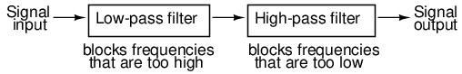
Diagrama de bloques a nivel de sistema de un filtro de paso de banda.
Lo que surge de la combinación en serie de estos dos circuitos de filtro es un circuito que sólo permitirá el paso de aquellas frecuencias que no sean ni demasiado altas ni demasiado bajas. Usando componentes reales, así es como se vería un esquema típico.a continuación. La respuesta del filtro de paso de banda se muestra en (Figuraa continuación)
{kind=link}
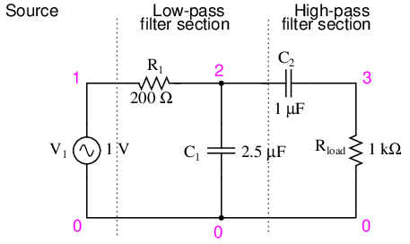
Filtro paso banda capacitivo.
capacitive bandpass filter v1 1 0 ac 1 sin r1 1 2 200 c1 2 0 2.5u c2 2 3 1u rload 3 0 1k .ac lin 20 100 500 .plot ac v(3) .end
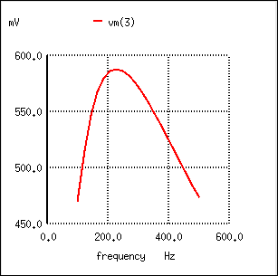
La respuesta de un filtro de paso de banda capacitivo alcanza su punto máximo dentro de un rango de frecuencia estrecho.
Los filtros de paso de banda también se pueden construir utilizando inductores, pero como se mencionó anteriormente, la "pureza" reactiva de los capacitores les da una ventaja de diseño. Si tuviéramos que diseñar un filtro de paso de banda usando inductores, podría verse así en la Figuraa continuación.
{kind=link}
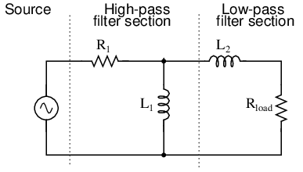
Filtro inductivo de paso de banda.
El hecho de que la sección de paso alto sea “primero” en este diseño en lugar de la sección de paso bajo no supone ninguna diferencia en su funcionamiento general. Seguirá filtrando todas las frecuencias demasiado altas o demasiado bajas.
Si bien la idea general de combinar filtros de paso bajo y paso alto para crear un filtro de paso de banda es sólida, no está exenta de ciertas limitaciones. Debido a que este tipo de filtro de paso de banda funciona confiando en cualquiera de las secciones parabloquearfrecuencias no deseadas, puede resultar difícil diseñar un filtro de este tipo que permita el paso sin obstáculos dentro del rango de frecuencia deseado. Tanto la sección de paso bajo como la de paso alto siempre bloquearán las señales hasta cierto punto, y su esfuerzo combinado produce, en el mejor de los casos, una señal atenuada (amplitud reducida), incluso en el pico del rango de frecuencia de la “banda de paso”. Observe el pico de la curva en el análisis anterior de SPICE: el voltaje de carga de este filtro nunca supera los 0,59 voltios, aunque el voltaje de la fuente es un voltio completo. Esta atenuación de la señal se vuelve más pronunciada si el filtro está diseñado para ser más selectivo (curva más pronunciada, banda más estrecha de frecuencias transitables).
Existen otros métodos para lograr la operación de paso de banda sin sacrificar la intensidad de la señal dentro de la banda de paso. Discutiremos esos métodos un poco más adelante en este capítulo.
- REVISAR:
- A paso de bandaEl filtro funciona para eliminar las frecuencias que son demasiado bajas o demasiado altas, permitiendo el paso fácil sólo a las frecuencias dentro de un cierto rango.
- Los filtros de paso de banda se pueden fabricar apilando un filtro de paso bajo al final de un filtro de paso alto, o viceversa.
- "Atenuar" significa reducir o disminuir la amplitud. Cuando bajas el control de volumen de tu estéreo, estás "atenuando" la señal que se envía a los altavoces.
Band-stop filters
También llamadoeliminacion de banda, rechazo de banda, omuescafiltros, este tipo de filtro pasa todas las frecuencias por encima y por debajo de un rango particular establecido por los valores de los componentes. No es sorprendente que pueda estar hecho de un filtro de paso bajo y un filtro de paso alto, al igual que el diseño de paso de banda, excepto que esta vez conectamos las dos secciones de filtro en paralelo entre sí en lugar de en serie. (Cifraa continuación)
{kind=link}
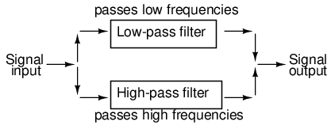
Diagrama de bloques a nivel de sistema de un filtro supresor de banda.
Construido con dos secciones de filtro capacitivo, se parece a (Figuraa continuación).
{kind=link}
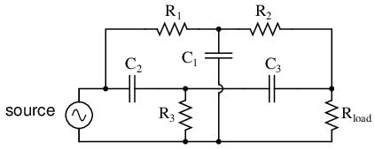
Filtro eliminador de banda “Twin-T”.
La sección del filtro de paso bajo se compone de R1, R2y C1en configuración “T”. La sección del filtro de paso alto se compone de C2, C3y R3también en configuración “T”. En conjunto, esta disposición se conoce comúnmente como filtro "Twin-T", y brinda una respuesta nítida cuando los valores de los componentes se eligen en las siguientes proporciones:
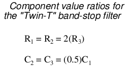
Dadas estas proporciones de componentes, la frecuencia de rechazo máximo (la “frecuencia de muesca”) se puede calcular de la siguiente manera:
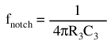
La impresionante capacidad de detención de banda de este filtro se ilustra en el siguiente análisis de SPICE: (Figuraa continuación)
{kind=link}
twin-t bandstop filter v1 1 0 ac 1 sin r1 1 2 200 c1 2 0 2u r2 2 3 200 c2 1 4 1u r3 4 0 100 c3 4 3 1u rload 3 0 1k .ac lin 20 200 1.5k .plot ac v(3) .end
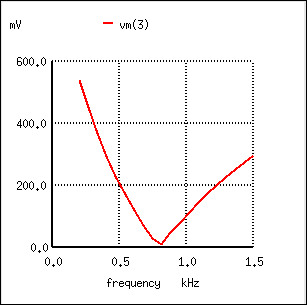
Respuesta del filtro eliminador de banda “twin-T”.
- REVISAR:
- A parada de bandaEl filtro funciona para filtrar las frecuencias que están dentro de un cierto rango, permitiendo el paso fácil sólo a las frecuencias fuera de ese rango. También conocido comoeliminacion de banda, rechazo de banda, omuescafiltros.
- Los filtros de eliminación de banda se pueden fabricar colocando un filtro de paso bajo en paralelo con un filtro de paso alto. Por lo general, tanto la sección de filtro de paso bajo como la de paso alto tienen la configuración "T", lo que da el nombre de "Twin-T" a la combinación de banda eliminada.
- La frecuencia de máxima atenuación se llamamuescafrecuencia.
Resonant filters
Hasta ahora, los diseños de filtros en los que nos hemos concentrado han empleadocualquieracondensadoresorinductores, pero nunca ambos al mismo tiempo. A estas alturas ya deberíamos saber que las combinaciones de L y C tenderán a resonar, y esta propiedad puede explotarse en el diseño de circuitos de filtro de paso de banda y supresión de banda.
Los circuitos LC en serie brindan una impedancia mínima en resonancia, mientras que los circuitos LC (“tanque”) en paralelo brindan una impedancia máxima en su frecuencia de resonancia. Sabiendo esto, tenemos dos estrategias básicas para diseñar filtros de paso de banda o filtros de eliminación de banda.
Para los filtros de paso de banda, las dos estrategias resonantes básicas son las siguientes: serie LC para pasar una señal (Figuraa continuación), o LC paralelo (Figuraa continuación) para acortar una señal. Los dos esquemas se contrastarán y simularán aquí:
{kind=link}
{kind=link}
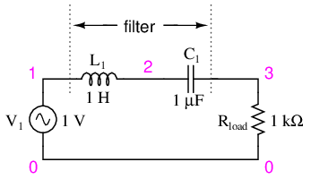
Filtro paso banda LC resonante serie.
Los componentes de la serie LC pasan la señal en resonancia y bloquean las señales de cualquier otra frecuencia para que no lleguen a la carga. (Cifraa continuación)
{kind=link}
series resonant bandpass filter v1 1 0 ac 1 sin l1 1 2 1 c1 2 3 1u rload 3 0 1k .ac lin 20 50 250 .plot ac v(3) .end
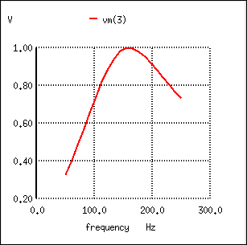
Filtro paso banda resonante en serie: picos de tensión a frecuencia de resonancia de 159,15 Hz.
Un par de puntos a tener en cuenta: observe cómo prácticamente no hay atenuación de la señal dentro de la “banda de paso” (el rango de frecuencias cerca del pico de voltaje de carga), a diferencia de los filtros de paso de banda hechos solo con capacitores o inductores. Además, dado que este filtro funciona según el principio de resonancia LC en serie, cuya frecuencia de resonancia no se ve afectada por la resistencia del circuito, el valor de la resistencia de carga no sesgará la frecuencia máxima. Sin embargo, diferentes valores para la resistencia de cargavoluntadcambiar la “inclinación” del diagrama de Bode (la “selectividad” del filtro).
El otro estilo básico de filtros de paso de banda resonantes emplea un circuito de tanque (combinación LC paralela) para evitar que las señales de frecuencia demasiado altas o demasiado bajas lleguen a la carga: (Figuraa continuación)
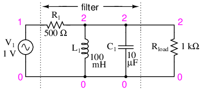
Filtro paso banda resonante paralelo.
El circuito del tanque tendrá mucha impedancia en resonancia, lo que permitirá que la señal llegue a la carga con una atenuación mínima. Sin embargo, por debajo o por encima de la frecuencia de resonancia, el circuito del tanque tendrá una baja impedancia, lo que provocará un cortocircuito en la señal y dejará caer la mayor parte a través de la resistencia en serie R.1. (Cifraa continuación)
{kind=link}
parallel resonant bandpass filter v1 1 0 ac 1 sin r1 1 2 500 l1 2 0 100m c1 2 0 10u rload 2 0 1k .ac lin 20 50 250 .plot ac v(2) .end
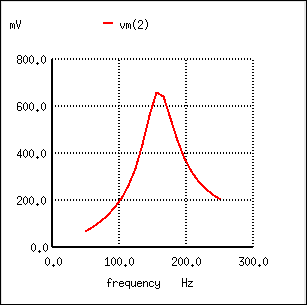
Filtro resonante paralelo: el voltaje alcanza un pico de frecuencia resonante de 159,15 Hz.
Al igual que los diseños de filtros de paso bajo y paso alto que se basan en una resistencia en serie y un componente de “cortocircuito” paralelo para atenuar frecuencias no deseadas, este circuito resonante nunca puede proporcionar voltaje de entrada (fuente) completo a la carga. Esa resistencia en serie siempre reducirá una cierta cantidad de voltaje siempre que haya una resistencia de carga conectada a la salida del filtro.
Cabe señalar que esta forma de circuito de filtro de paso de banda es muy popular en los circuitos de sintonización de radio analógica, para seleccionar una frecuencia de radio particular entre la multitud de frecuencias disponibles en la antena. En la mayoría de los circuitos sintonizadores de radio analógicos, el dial giratorio para la selección de estaciones mueve un condensador variable en un circuito tanque.

El condensador variable sintoniza el circuito del tanque del receptor de radio para seleccionar una entre muchas estaciones de transmisión.
El condensador variable y el inductor de núcleo de aire que se muestran en la FiguraanteriorFotografía de una radio simple comprende los elementos principales del filtro del circuito del tanque utilizado para discriminar la señal de una estación de radio de otra.
{kind=link}
Así como podemos usar circuitos resonantes LC en serie y paralelo para pasar solo aquellas frecuencias dentro de un cierto rango, también podemos usarlos para bloquear frecuencias dentro de un cierto rango, creando un filtro de eliminación de banda. Nuevamente, tenemos dos estrategias principales a seguir para hacer esto: usar resonancia en serie o en paralelo. Primero, veremos la variedad de series: (Figuraa continuación)
{kind=link}
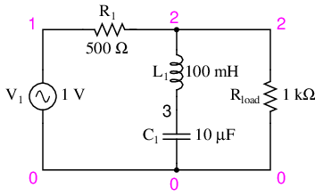
Filtro de parada de banda resonante en serie.
Cuando la combinación LC en serie alcanza la resonancia, su muy baja impedancia corta la señal y la deja caer a través de la resistencia R.1e impidiendo su paso sobre la carga. (Cifraa continuación)
{kind=link}
series resonant bandstop filter v1 1 0 ac 1 sin r1 1 2 500 l1 2 3 100m c1 3 0 10u rload 2 0 1k .ac lin 20 70 230 .plot ac v(2) .end
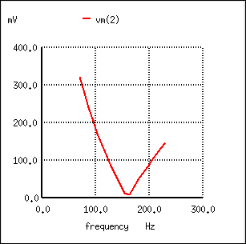
Filtro supresor de banda resonante en serie: Frecuencia de muesca = frecuencia resonante LC (159,15 Hz).
A continuación, examinaremos el filtro de eliminación de banda resonante paralelo: (Figuraa continuación)
{kind=link}
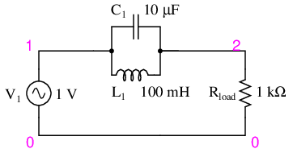
Filtro de parada de banda resonante paralelo.
Los componentes LC paralelos presentan una alta impedancia en frecuencia de resonancia, bloqueando así la señal de la carga en esa frecuencia. Por el contrario, pasa señales a la carga en cualquier otra frecuencia. (Cifraa continuación)
{kind=link}
parallel resonant bandstop filter v1 1 0 ac 1 sin l1 1 2 100m c1 1 2 10u rload 2 0 1k .ac lin 20 100 200 .plot ac v(2) .end
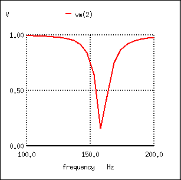
Filtro supresor de banda resonante paralelo: Frecuencia de muesca = frecuencia resonante LC (159,15 Hz).
Una vez más, observe cómo la ausencia de una resistencia en serie genera una atenuación mínima para todas las señales deseadas (pasadas). Por el contrario, la amplitud en la frecuencia de muesca es muy baja. En otras palabras, se trata de un filtro muy “selectivo”.
En todos estos diseños de filtros resonantes, la selectividad depende en gran medida de la "pureza" de la inductancia y capacitancia utilizadas. Si hay alguna resistencia parásita (especialmente probable en el inductor), esto disminuirá la capacidad del filtro para discriminar frecuencias con precisión, además de introducir efectos antiresonantes que sesgarán la frecuencia pico/muesca.
En este punto es necesario hacer una advertencia a quienes diseñan filtros de paso bajo y paso alto. Después de evaluar los diseños de filtros de paso bajo y paso alto estándar RC y LR, a un estudiante se le podría ocurrir que se podría lograr un diseño mejor y más efectivo de filtro de paso bajo o paso alto combinando elementos capacitivos e inductivos como en la Figuraa continuación.
{kind=link}
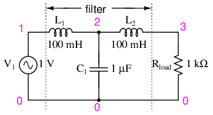
Filtro de paso bajo inductivo capacitivo.
Los inductores deben bloquear las frecuencias altas, mientras que el capacitor también debe cortocircuitar las frecuencias altas, ambos trabajando juntos para permitir que solo las señales de baja frecuencia lleguen a la carga.
Al principio, esto parece ser una buena estrategia y elimina la necesidad de una resistencia en serie. Sin embargo, el estudiante más perspicaz reconocerá que cualquier combinación de condensadores e inductores juntos en un circuito probablemente cause efectos resonantes a una determinada frecuencia. La resonancia, como hemos visto antes, puede provocar que sucedan cosas extrañas. Tracemos un análisis SPICE y veamos qué sucede en un amplio rango de frecuencia: (Figuraa continuación)
{kind=link}
lc lowpass filter v1 1 0 ac 1 sin l1 1 2 100m c1 2 0 1u l2 2 3 100m rload 3 0 1k .ac lin 20 100 1k .plot ac v(3) .end
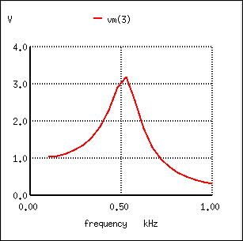
Respuesta inesperada del filtro de paso bajo LC.
Lo que se suponía que era un filtro de paso bajo resulta ser un filtro de paso de banda con un pico alrededor de 526 Hz. La capacitancia y la inductancia en este circuito de filtro alcanzan resonancia en ese punto, creando una gran caída de voltaje alrededor de C.1, que se ve en la carga, independientemente de L2La influencia atenuante. ¡El voltaje de salida a la carga en este punto en realidad excede el voltaje de entrada (fuente)! Un poco más de reflexión revela que si L1y C2están en resonancia, impondrán una carga muy pesada (impedancia muy baja) en la fuente de CA, lo que podría no ser bueno tampoco. Realizaremos el mismo análisis nuevamente, solo que esta vez trazando C1voltaje, vm(2) en la figuraa continuación, y la corriente de la fuente, I(v1), junto con el voltaje de carga, vm(3):
{kind=link}
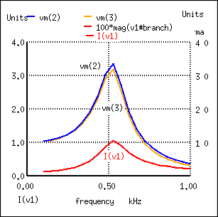
La corriente aumenta ante la resonancia no deseada del filtro de paso bajo LC.
Efectivamente, vemos el voltaje en C1y la corriente de la fuente alcanza un punto alto a la misma frecuencia donde el voltaje de carga es máximo. Si esperáramos que este filtro proporcionara una función de paso bajo simple, los resultados podrían decepcionarnos.
El problema es que un filtro LC tiene una impedancia de entrada y una impedancia de salida que deben coincidir. La impedancia de la fuente de voltaje debe coincidir con la impedancia de entrada del filtro, y la impedancia de salida del filtro debe coincidir con "rload" para obtener una respuesta plana. La impedancia de entrada y salida viene dada por la raíz cuadrada de (L/C).
Z = (L/C)1/2
Tomando los valores de los componentes de (Figuraa continuación), podemos encontrar la impedancia del filtro y la , R requerida.gy rcargapara igualarlo.
For L= 100 mH, C= 1µF Z = (L/C)1/2=((100 mH)/(1 µF))1/2 = 316 Ω
En la figuraa continuaciónhemos agregado Rg= 316 Ω al generador, y cambió la carga Rcargade 1000 Ω a 316 Ω. Tenga en cuenta que si necesitáramos manejar una carga de 1000 Ω, la relación L/C podría haberse ajustado para igualar esa resistencia.
{kind=link}
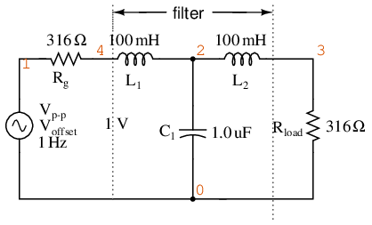
Circuito de fuente y carga combinados con filtro de paso bajo LC.
LC matched lowpass filter V1 1 0 ac 1 SIN Rg 1 4 316 L1 4 2 100m C1 2 0 1.0u L2 2 3 100m Rload 3 0 316 .ac lin 20 100 1k .plot ac v(3) .end
Cifraa continuaciónmuestra la respuesta "plana" del filtro de paso bajo LC cuando la impedancia de fuente y carga coincide con las impedancias de entrada y salida del filtro.
{kind=link}
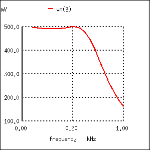
La respuesta del filtro de paso bajo LC de impedancia adaptada es casi plana hasta la frecuencia de corte.
El punto a destacar al comparar la respuesta del filtro inigualable (Figuraanterior) al filtro correspondiente (Figuraanterior) es que la carga variable en el filtro produce un cambio considerable de voltaje. Esta propiedad es directamente aplicable a las fuentes de alimentación con filtro LC:regulaciónes pobre. El voltaje de la fuente de alimentación cambia con un cambio en la carga. Esto es indeseable.
Esta mala regulación de la carga puede mitigarse mediante unestrangulador oscilante. Este es unahogo, inductor, diseñado parasaturarcuando una gran corriente continua lo atraviesa. Por saturar queremos decir que la corriente CC crea un nivel "demasiado" alto de flujo en el núcleo magnético, de modo que el componente CA de la corriente no puede variar el flujo. Dado que la inducción es proporcional a dΦ/dt, la fuerte corriente continua disminuye la inductancia. La disminución de la inductancia disminuye la reactancia X.L. La disminución de la reactancia reduce la caída de voltaje a través del inductor; aumentando así el voltaje en la salida del filtro. Esto mejora la regulación de tensión respecto a cargas variables.
A pesar de la resonancia no deseada, los filtros de paso bajo formados por condensadores e inductores se utilizan con frecuencia como etapas finales en fuentes de alimentación de CA/CC para filtrar el voltaje de "ondulación" de CA no deseado fuera de la CC convertida de CA. ¿A qué se debe esto, si este diseño de filtro en particular posee un punto de resonancia potencialmente problemático?
La respuesta está en la selección de los tamaños de los componentes del filtro y las frecuencias encontradas en un convertidor CA/CC (rectificador). Lo que intentamos hacer en un filtro de fuente de alimentación de CA/CC es separar el voltaje de CC de una pequeña cantidad de voltaje de CA de frecuencia relativamente alta. Los inductores y condensadores del filtro son generalmente bastante grandes (lo típico son varios Henrys para los inductores y miles de µF para los condensadores), lo que hace que la frecuencia de resonancia del filtro sea muy, muy baja. CC, por supuesto, tiene una “frecuencia” de cero, por lo que no hay forma de que pueda hacer resonar un circuito LC. La tensión de ondulación, por otro lado, es una tensión alterna no sinusoidal que consta de una frecuencia fundamental al menos dos veces la frecuencia de la tensión alterna convertida, con armónicos muchas veces mayores. Para fuentes de alimentación enchufables que funcionan con alimentación de CA de 60 Hz (60 Hz en Estados Unidos; 50 Hz en Europa), la frecuencia más baja que verá el filtro es de 120 Hz (100 Hz en Europa), que está muy por encima de su punto de resonancia. Por lo tanto, se evita por completo el punto de resonancia potencialmente problemático en un filtro de este tipo.
El siguiente análisis SPICE calcula la salida de voltaje (CA y CC) para dicho filtro, con fuentes de voltaje en serie CC y CA (120 Hz) que proporcionan una aproximación aproximada de la salida de frecuencia mixta de un convertidor CA/CC.
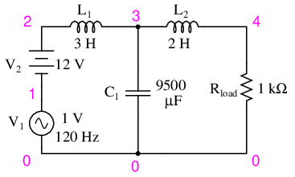
El filtro de fuente de alimentación CA/CC proporciona energía CC "sin ondulaciones".
ac/dc power supply filter v1 1 0 ac 1 sin v2 2 1 dc l1 2 3 3 c1 3 0 9500u l2 3 4 2 rload 4 0 1k .dc v2 12 12 1 .ac lin 1 120 120 .print dc v(4) .print ac v(4) .end
v2 v(4) 1.200E+01 1.200E+01 DC voltage at load = 12 volts freq v(4) 1.200E+02 3.412E-05 AC voltage at load = 34.12 microvolts
Con 12 voltios CC completos en la carga y solo 34,12 µV de CA restantes de la fuente de 1 voltio CA impuesta a través de la carga, este diseño de circuito demuestra ser un filtro de fuente de alimentación muy eficaz.
La lección aprendida aquí sobre los efectos resonantes también se aplica al diseño de filtros de paso alto que utilizan tanto condensadores como inductores. Siempre que las frecuencias deseadas y no deseadas estén a ambos lados del punto de resonancia, el filtro funcionará bien. Pero si se aplica cualquier señal de magnitud significativa cercana a la frecuencia de resonancia a la entrada del filtro, ¡sucederán cosas extrañas!
- REVISAR:
- Se pueden emplear combinaciones resonantes de capacitancia e inductancia para crear filtros de paso de banda y de eliminación de banda muy efectivos sin la necesidad de agregar resistencia en un circuito que disminuiría el paso de las frecuencias deseadas.
-
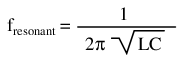
Resumen
Por muy extenso que haya sido este capítulo hasta este punto, sólo comienza a arañar la superficie del diseño de filtros. Una lectura rápida de cualquier libro de texto sobre diseño de filtros avanzado es suficiente para demostrar mi punto. Las matemáticas involucradas con la selección de componentes y la predicción de la respuesta de frecuencia son, como mínimo, desalentadoras, mucho más allá del alcance del estudiante principiante en electrónica. Mi intención aquí ha sido presentar los principios básicos del diseño de filtros con la menor cantidad de matemáticas posible, apoyándome en el poder del programa de análisis de circuitos SPICE para explorar el rendimiento del filtro. No se pueden subestimar los beneficios de este tipo de software de simulación por ordenador, ni para el estudiante principiante ni para el ingeniero en activo.
El software de simulación de circuitos permite al estudiante explorar diseños de circuitos mucho más allá del alcance de sus habilidades matemáticas. Con la capacidad de generar diagramas de Bode y figuras precisas, se puede lograr una comprensión intuitiva de los conceptos de circuitos, algo que a menudo se pierde cuando un estudiante tiene la tarea de resolver largas ecuaciones a mano. Si no está familiarizado con el uso de SPICE u otros programas de simulación de circuitos, ¡tómese el tiempo para estarlo! Será de gran beneficio para tu estudio. Ver los análisis de SPICE presentados en este libro es una ayuda para comprender los circuitos, pero configurar y analizar sus propias simulaciones de circuitos es un esfuerzo mucho más interesante y valioso como estudiante.
Colaboradores
Los contribuyentes a este capítulo se enumeran en orden cronológico de sus contribuciones, desde el más reciente hasta el primero. Consulte el Apéndice 2 (Lista de colaboradores) para fechas e información de contacto.
Jason Stark(Junio de 2000): Formato de documentos HTML, que dio lugar a una segunda edición mucho más atractiva.
Lecciones en circuitos eléctricoscopyright (C) 2000-2023 Tony R. Kuphaldt, según los términos y condiciones delCC BY License.